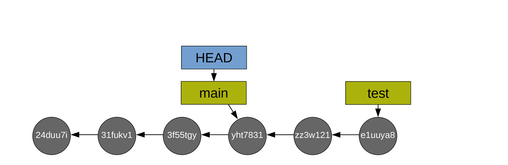
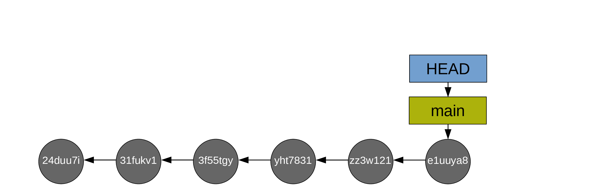
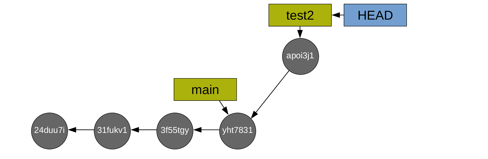

Branches
Branches
One of the reasons Git has become so popular is its branch system.
Whenever we create the first commit of a project, Git creates a little pointer called main: that’s the main branch for the project.
A branch in Git is just that: a little pointer. This makes creating branches extremely quick and cheap. But they are extremely convenient.
Instead of checking out a commit (which creates a detached HEAD state), we can instead create a new branch on the commit of our choice with:
git switch -c newbranch <commit-hash>Switched to a new branch 'newbranch'This creates a new branch called newbranch on the commit of your choice and switches HEAD to it. If you do this instead of entering a detached HEAD state, it is totally safe to make changes and create commits from there. You can easily switch HEAD back and forth between the two branches with:
git switch main # Moves HEAD back to the branch mainSwitched to branch 'main'git switch newbranchSwitched to branch 'newbranch'git statusOn branch newbranch
nothing to commit, working tree cleanIf you already checked out a commit and are in a detached HEAD state, you can create the new branch newbranch on that commit and switch to it with:
git switch -c newbranchSwitched to a new branch 'newbranch'Those are equivalent workflows. Just don’t forget never to work from a detached HEAD state. You can look around in that state, but that’s it. Why? Because commits that are not part of a branch get automatically deleted on a regular basis when Git runs its garbage collection. So any commits you make from a detached HEAD will eventually be lost. And that’s probably not what you want.
In short, git switch allows you to switch HEAD from one branch to another. With the -c flag, you can create a new branch before switching to it. And by adding some starting point such as a commit, the new branch gets created on that commit rather than on the position of HEAD.
Now, have a look at what happens if you run git log from newbranch:
git logcommit 7f94f8ed631a7390a910fa13cd4954cf9e8a3061 (HEAD -> newbranch)
Author: Marie-Helene Burle <xxx@xxx>
Date: Mon Oct 3 18:19:28 2022 -0700
Initial commitHorror! It looks like some of your commits disappeared!
In fact, they still exist, but by default, git log only shows what is on the current branch. To see all the commits that are on any branch in your project, you need to add the --all flag:
git log --allcommit 863afd650ecaeab85da2f8ed0d3c88a778754727 (main)
Author: Marie-Helene Burle <xxx@xxx>
Date: Tue Oct 4 10:32:39 2022 -0700
Add .gitignore file with data and results
commit dc780c75c76220a39f7c89a76bebb670dad25b8e
Author: Marie-Helene Burle <xxx@xxx>
Date: Tue Oct 4 10:32:12 2022 -0700
Define the variable a in R script
commit 5ba96b254b505f7d04f59f988a621a746a0c6896
Author: Marie-Helene Burle <xxx@xxx>
Date: Tue Oct 4 10:28:51 2022 -0700
Add conclusion to the manuscript
commit 451c47b386895b8b0b5bdd1a8734ef1d51f9ccc9
Author: Marie-Helene Burle <xxx@xxx>
Date: Mon Oct 3 18:35:51 2022 -0700
Add result section to manuscript
commit 7f94f8ed631a7390a910fa13cd4954cf9e8a3061 (HEAD -> newbranch)
Author: Marie-Helene Burle <xxx@xxx>
Date: Mon Oct 3 18:19:28 2022 -0700
Initial commitIn this log, we can now see main, but that HEAD points to newbranch.
Listing branches
git branch main
* newbranchThe * shows the branch you are currently on (i.e. the branch to which HEAD points to).
Comparing branches
You can use git diff to compare branches:
git diff newbranch maindiff --git a/.gitignore b/.gitignore
new file mode 100644
index 0000000..e85f44a
--- /dev/null
+++ b/.gitignore
@@ -0,0 +1,2 @@
+/data/
+/results/
diff --git a/ms/chapter3.md b/ms/chapter3.md
index b88424b..80d2c5c 100644
--- a/ms/chapter3.md
+++ b/ms/chapter3.md
@@ -7,3 +7,11 @@ Bla bla bla bla bla.
## Methods
Bla bla bla.
+
+## Results
+
+We now have a bunch of results in our markdown manuscript.
+
+## Conclusion
+
+And finally, the great conclusion of our paper.
diff --git a/src/chapter3.R b/src/chapter3.R
index 95f1592..2bf030d 100644
--- a/src/chapter3.R
+++ b/src/chapter3.R
@@ -7,3 +7,5 @@ df <- data.frame(
)
ggplot(df, aes(x, y)) + geom_point()
+
+a = 23This shows all the lines that have been modified (added or deleted) between the commits both branches point to.
Merging branches
If you want to merge branches, switch to the branch you want to merge into the other one, then run git merge.
For instance, if we want to merge newbranch onto main, we would first switch to newbranch (we are already on it, so nothing to do here), then:
git merge mainUpdating 7f94f8e..863afd6
Fast-forward
.gitignore | 2 ++
ms/chapter3.md | 8 ++++++++
src/chapter3.R | 2 ++
3 files changed, 12 insertions(+)
create mode 100644 .gitignoreThis merge is called a “fast-forward” merge because main and newbranch had not diverged. It was simply a question of having newbranch catch up to main.
If you run git log again, you will see that newbrach has now caught up with main:
git logcommit 863afd650ecaeab85da2f8ed0d3c88a778754727 (HEAD -> newbranch, main)
Author: Marie-Helene Burle <xxx@xxx>
Date: Tue Oct 4 10:32:39 2022 -0700
Add .gitignore file with data and results
commit dc780c75c76220a39f7c89a76bebb670dad25b8e
Author: Marie-Helene Burle <xxx@xxx>
Date: Tue Oct 4 10:32:12 2022 -0700
Define the variable a in R script
commit 5ba96b254b505f7d04f59f988a621a746a0c6896
Author: Marie-Helene Burle <xxx@xxx>
Date: Tue Oct 4 10:28:51 2022 -0700
Add conclusion to the manuscript
commit 451c47b386895b8b0b5bdd1a8734ef1d51f9ccc9
Author: Marie-Helene Burle <xxx@xxx>
Date: Mon Oct 3 18:35:51 2022 -0700
Add result section to manuscript
commit 7f94f8ed631a7390a910fa13cd4954cf9e8a3061
Author: Marie-Helene Burle <xxx@xxx>
Date: Mon Oct 3 18:19:28 2022 -0700
Initial commitHere is a classic situation of fast-forward merge.
Instead of working on your branch main, you create a test branch and work on it (so HEAD is on the branch test and both move along as you create commits):

When you are happy with the changes you made on your test branch, you decide to merge main onto it.
First, you switch to main:

Then you do the fast-forward merge from main onto test (so main catches up to test):

Then, usually, you delete the branch test as it has served its purpose (with git branch -d test). Alternatively, you can switch back to it and do the next bit of experimental work in it. This allows to keep main free of possible mishaps and bad developments (if you aren’t happy with the work you did on your test branch, you can simply delete it and Git will clean the commits that are on it but not on main during the next garbage collection.

If both branches have diverged (you created commits from both main and newbranch), the merge would require the creation of an additional commit called a “merge commit”.
Here is a classic situation of merge with a commit.

You create a test branch and switch to it:


Then you create some commits:


Now you switch back to main:

And you create commits from main too:


To merge your main branch and your test branch, a new commit is now required (note that the command is the same as in the case of a fast-forward merge: git merge. Git will create the new commit automatically. As long as there is no conflict, it is just as easy as a fast-forward merge. We will talk later about resolving conflicts).
After which, you can delete the (now useless) test branch (with git branch -d test2):